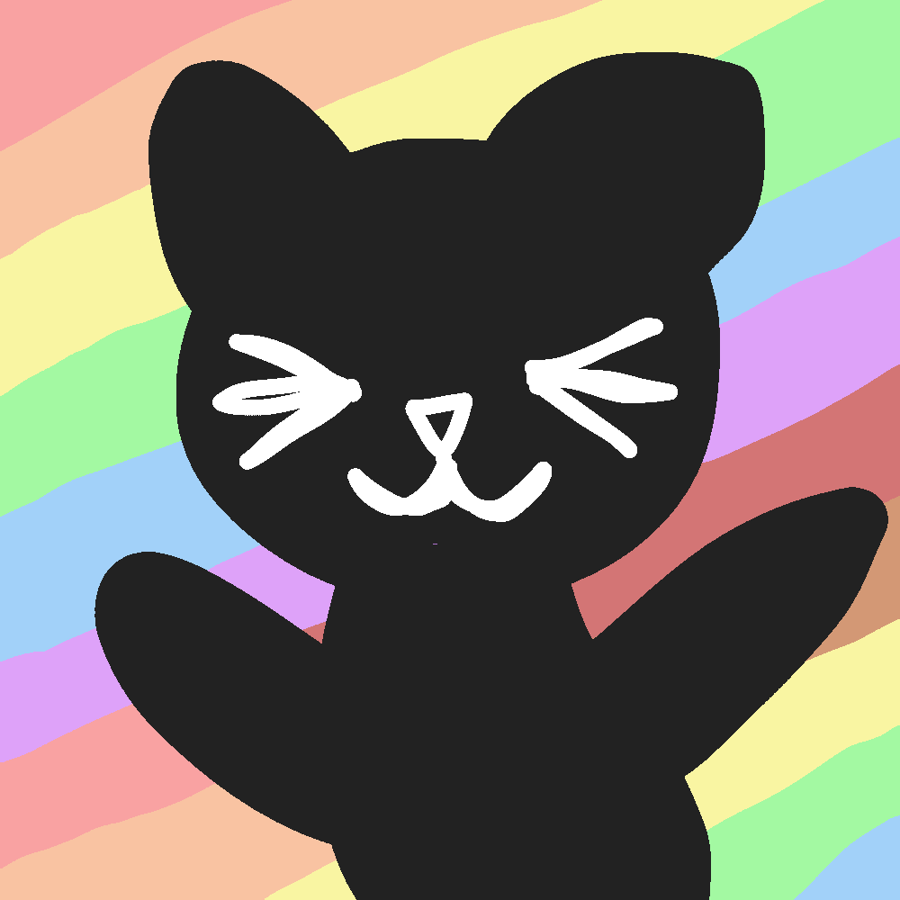

About Me
Hello, I'm a creature who loves things like cardboard boxes that are big enough to hide in, cats, front end web development, drawing, writing, and my favorite shows. My favorite shows are My Little Pony: Friendship is Magic and The Owl House, in case ya wanted to know.
Go to my pronouns.page to learn some other things about me. It contains some essential info about things like the pronouns I go by and the terms I prefer to name a few examples. It also contains more useful stuff like how to use those pronouns when talking and definitions of certain terms. And here's a link to my art account on cara if ya wanna see some art I made.
Life Updates
This section contains little updates. Most entries won't be very long if this goes according to plan. If an entry is longer than planned then it will have a read more button. Posts are in reverse-chronological order.
First post!
Monday March 17th, 2025 - 3:25 PM
Hello! This is my first life update post. Recently I've just been trying to keep my head above water. I'm still trying to figure out what I want to do. I was thinking I'd go to school for web development after I get my GED cuz I'm interested in that but I'm also kinda nervous about it.
Sample post to test scroll
Date
Text
More Info About This Site
This website is made with my own two hands using HTML and CSS. It's also hosted for free using Github Pages. Here is the link to this website's Github page.
When I got banned from Facebook it was for something related to identity. (I can't remember their exact phrasing) I honestly suspect that it was partially due to the fact that I changed my name a while back, but whatever. Anyway, Facebook is annoying anyway and I didn't have much reason to be on there, so I made this website to replace one of the only reasons I was on there.
Also, I wanted to make it so each section would have a cloud as its background image but I can't figure out a way to do that without having to resize it every time I add more text which would be annoying. If ya got any advice when it comes to that let me know. Also the background image on the header text doesn't look good on a bunch of screen sizes and I dunno how to fix that.
Credits
A credits page for me to give credit where credit is due.
- This article keeps helping me remember how to center a div.
- This is the font used for the first header text. It was made by Helotype and the font is called Kitto Katto.
- The favicon is some random silly cat picture that I'm not sure of the origin of.